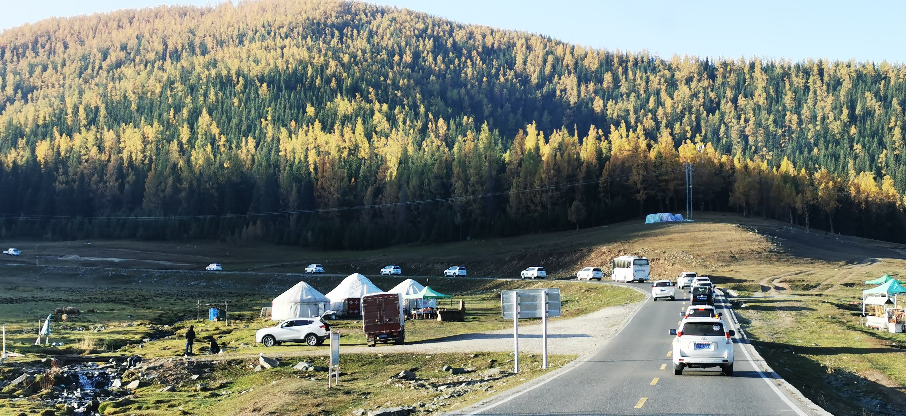

1.普通的文本aaaaaaajjfdxxx  一直是心中敬
我是文本哈哈哈哈哈啊
仰的珠穆朗玛峰，虽然在媒体上无数次目睹它的巍峨千姿、听到它的傲然惊险，可从未和自己联系过，模糊印象是一个远在天边、不明所以的遥远梦幻！然而，当藏族司机大哥转出山口，告诉大家前面连绵雪山就是珠峰时，不知哪来的激情立刻就兴奋激动了起来。
万里无云的蓝天碧空下，喜马拉雅七峰一字排开、清晰而熠熠生辉，珠峰只是高出点点的阿哥，没有独自的高不可攀。立在似乎和珠峰等高的垭口，平视着珠峰的眉眼，缓步着向前走近它，心情却幻化成亲近和喜爱，为它的明朗、清晰、平视、青白素雅而亲近；为它的巍峨泰然、、熠熠生辉、起伏连手而喜爱！不知珠峰是喜欢高处不胜寒的孤寂敬仰还是更渴望有靠近、有牵手、有距离的喜爱尊重？ 左右弯隆的双翅似成就自己为世界之最的翼翅，亦似呵护牵连的臂膀，这似乎已道出了答案。
珠峰不再模糊虚幻、敬而远之，而是高远蓝天、明朗日月下伫立的连襟、安详、青白人生！